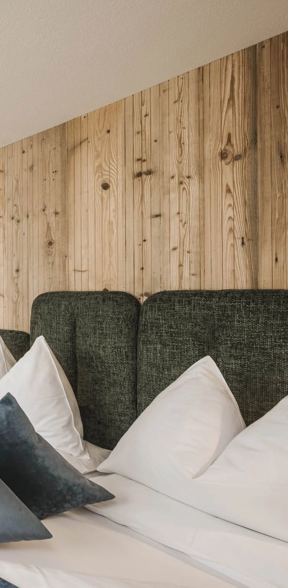

Hospitality Interior — Wellness Suite
A hospitality interior designed around intimacy, material warmth and the transition between living and wellness spaces. Timber, textiles and controlled lighting create a calm atmosphere around the integrated sauna.


Next project
View